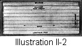

1917—American Dressmaking Step by Step
by Mme. Lydia Trattles Coates
Chapter 2—The Weave, Fold and Preparation of Materials
Lesson 2—The Weave (Illustration II-1)
- The Selvedge is the outside edge or woven border of materials.
- The Warp of materials is the length-wise threads, or the threads running in the same direction in which the selvedge is woven.
- The Woof of materials runs across and over and under the warp threads; and in an opposite direction to the selvedge.
- The Grain of materials runs with and in the same direction as the warp threads.
The Fold
- The Length-wise Fold is a fold made lengthwise of the material on a warp thread. (Illustration II-2.)
- The Crosswise Fold is a fold made straight across the warp threads from selvedge to selvedge. (Illustration II-3.)
- A Bias or Diagonal Fold is a fold made by bringing a straight lengthwise edge to a straight crosswise line. (Illustration II-4.) Any lengthwise angle is a bias line although not necessarily a true bias. In dressmaking this angle is called a "garment bias." Because material cut on a bias line will stretch, it is desirable for bindings, pipings, trimmings, etc.
Lesson 3—Correct and Economical Folding of Materials
- All materials with a nap should be folded and cut with the nap running downward, except velvet; plush, and corduroy. The nap of these run upward. Panne velvet, however, should be cut with the nap running downward.
- Materials with a floral design should be cut with the stems running downward and the flowers upward.
- Plaids, checks, stripes, and all materials with a design should be folded and cut to match in the best possible manner. The predominating stripe or design should be folded so that it falls on the center-front and the center-back lines. If necessary, cut out one portion at a time. Then lay the top end of your cut piece to the top of the uncut material with the right sides together, matching the design or nap. Then cut the corresponding portion.
- Diagonal materials should be folded and cut so that when the garment is finished and worn the diagonal twill runs downward from the left shoulder to the right hand or upward from the right hand to the left shoulder. (Illustration II-5.) Diagonal materials should not be folded or cut so that two bias edges will meet, as the lines come together on entirely different angles. (Illustration II-6.)
- When the edge of the pattern is to lie on a fold it is generally best to fold the material just the width of the widest portion of the pattern. (Illustration II-7.) This usually leaves one selvedge and a part of one edge of the goods uncut.
- When folding with the grain line of the pattern as the guide, follow the old rule of saving the center, and put the two selvedges together, cutting as near the edge of the material as possible. (Illustration II-8.)
- When the edge of the pattern is to be on a fold and the material is too narrow, fold the material lengthwise exactly in the center. Pin the edge of the pattern to this fold, then piece on the projecting amount. (Illustration II-9.)
If tab piecing is large or comes in a conspicuous place, a seam on the center line is often preferable. In this case fold the material crosswise (Illustration II-10) and pin the pattern a seam's width back from the selvedge. When material has a nap, figure, or design running only in one direction, one cuts to best advantage, and with least confusion, if the right and left sides are cut separately matching the design before cutting the material.
PREPARATION OF MATERIALS
Lesson 4—Sponging and Shrinking
Any material which is to be pressed, using water and a hot iron, must be sponged and shrunk before it is made up. Practically all woolen, linen, and cotton materials should be carefully shrunk before they are used. A few open-meshed materials can not be sponged at home on account of the shrinkage. Voiles and many dainty fabrics can be machine sponged and shrunk. To a certain degree sponging and shrinking prevent spotting from rain, yet it is wise to try shrinking a small piece of any material before shrinking or sponging the entire quantity. Fine mulls, flowered organdies, swisses, silks, satins, velvets, etc., should not be shrunk, and water should not at any time be applied in pressing them. All materials with selvedge must either have the selvedge cut off or clipped at frequent intervals, otherwise the material, when it is sponged or pressed, is liable to draw and get very much out of shape.
Articles Required
The articles usually found necessary for sponging, shrinking, and pressing are:
- A Table or Ironing-board over which has been stretched a padded ironing-sheet.
- A padded Sleeve-board. (Illustration 11-11.)
- Two Sleeve-cushions, one for pressing the top of the sleeve, made with a cap as illustrated so that it can be slipped over the narrow end of the sleeve-board (Illustration II-12, A), and one for pressing the bottom of the sleeve (Illustration II-12, B).
- A Tailors' Cushion to use in pressing tailored garments and curved seams. (Illustration 11-13.)
- An Ironing-sheet about a yard wide and 1 1/8 yard long.
- Pressing-cloths. One is needed for seams. It should be about 1 1/8 yard long and 5 inches wide. Another one for small pressing, about 12 by 12 inches, will be found useful.
- A Sponge to dampen the cloths in pressing.
- Two Flat-irons. Have one as large as can be handled, and the other a medium or small size. The larger one will be used for tailoring and all heavy work, and the lighter one for ordinary work.
To Shrink Woolens
- Lay the material right side down, open out the folds so that one thickness is pressed at a time.
- Wring out the ironing-sheet from cold water and lay it over the woolen material.
- Press with a hot iron, being careful that sufficient heat is applied to bring out all of the moisture from the material. Because of the amount of labor involved in shrinking woolen materials, have them shrunk at a tailors if possible.
To Shrink Cotton or Linen Materials
- If the material is colored, the color should be set before shrinking.
Blue can be set by using one-half cupful of vinegar and one tablespoonful of alum to a pail of water.
Reds, Pinks, and Black can be set by using two cupfuls of salt to a pail of water.
Browns and Lavenders can be set with one tablespoonful of sugar of lead to a pail of water.
Greens and Yellows can be set with two cupfuls of salt, or one tablespoonful of alum to a pail of water.
The materials must remain for several hours in the solution.
Cotton or linen materials which have no color should be left in a tub of cold water from twenty minutes to one hour. - Fold evenly and hang over a line to drip.
- As soon as the material has dried sufficiently to allow it to be handled, lay it right side down on the ironing-board, and press on the wrong side. This process should be repeated three times, otherwise the goods will shrink when laundered.
To Shrink Canvas
- Dip the canvas in hot water to dissolve any glue which the material may contain.
- Then proceed exactly as directed for shrinking cotton and linen materials.
Lesson 5—Correct Methods of Pressing
- Lay the material right side down on the ironing-board.
- Place the dry ironing-sheet over the material.
- With a wet sponge dampen the portion to be sponged or pressed.
- Place the iron over the dampened portion, being careful not to move the iron back and forth. Do not place the iron more than its distance ahead until the material is pressed dry. Neither should the iron stand too long in one place as the material might become marked.
To Press Silks and Satins
Use an iron that is not hot enough to scorch and press with a sheet of white tissue paper between the material and the iron. No water or moisture should be used.
To Press Velvets and Corduroys
Tailors press velvet and corduroy seams with their thumb, but women find it easier to place their thumb in the bowl of a kitchen spoon and press with it.
Velvet or corduroy seams may also be steamed and pressed by placing a hot iron upside down in an iron-stand. Then lay a wet cloth on the flat-iron and draw the seam over it.
The nap of velvet may be steamed in the same manner.
RULES FOR PRESSING SEAMS
Waists
Center-front—Press over tailors' cushion, pressing from the waistline toward the neck.
Center-back—Press over ironing-board from the waist-line toward the neck.
Side-front and Side-back Lines—Press over the tailors' cushion, pressing away from the bust and shoulder-blade line.
Underarm Seam—Press over tailors' cushion, pressing from the waistline toward the arm-scye.
Shoulder Seam—Press over tailors' cushion, pressing from the arm-scye toward the neck.
Collar—Press over tailors' cushion, pressing from the outside of the collar toward the neck.
Sleeves—Press the seams over the sleeve-board (Illustration II-11), pressing from the bottom of sleeves toward top. Press the top of the sleeve over sleeve cushion (Illustration II-12, A), pressing toward the underarm seam. Press the bottom of the sleeves over the smaller sleeve cushion (Illustration II-12, B), pressing toward the underarm seam.
Cuffs—Press over the tailors' cushion or the small sleeve cushion, pressing from the outside edge of the cuff toward the wrist.
Skirts
All Lines except the side lines are pressed on the ironing-board, pressing from the top of the skirt to the bottom.
The Side Lines of a fitted skirt from just below the hip-line to the waist-line are pressed over the tailors' cushion to give the rounding effect over the hips.
Plackets are pressed over the ironing-board unless the opening is on the side line. In this instance it is pressed over the tailors' cushion. All plackets are pressed from the bottom of the placket toward the top.
Hems, facings, etc., are pressed on the ironing-board and pressed across the line of the hem, and not along it.
To Remove Shine or Press-marks
- Lay the material on the ironing-board with the side upward from which the shine is to be removed.
- Lay a damp cloth over the shiny part.
- Place a hot iron over the damp cloth, letting the iron remain until the shiny spot has been well steamed.
- Remove the iron and cloth very quickly and brush the steam into the material.